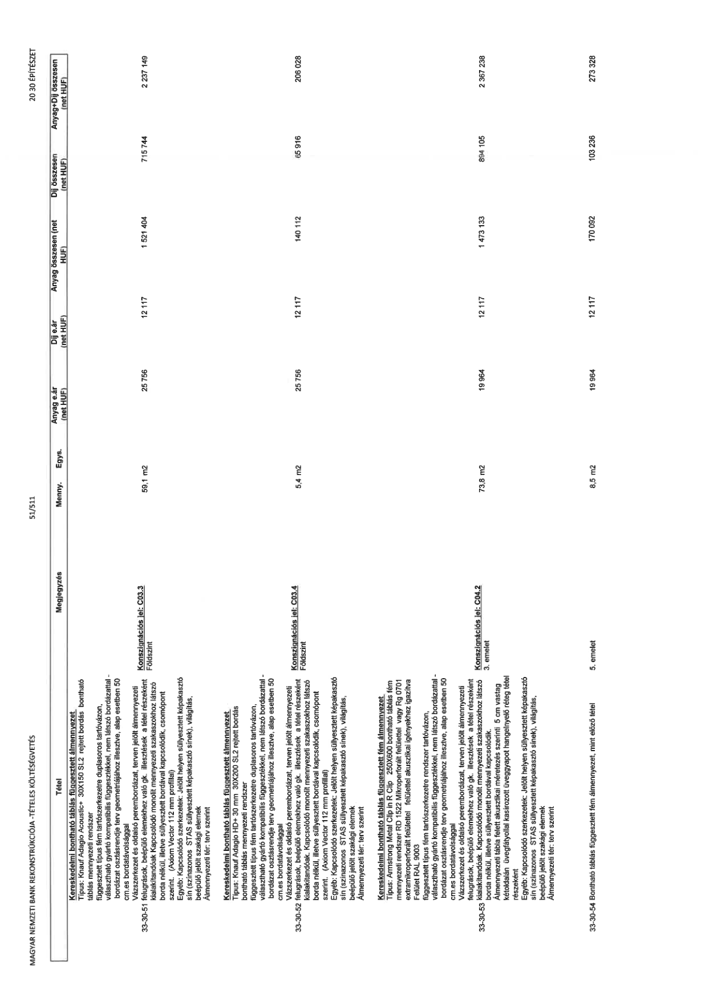

| Tétel | Megjegyzés | Menny. | Egys. | Anyag e.ár (net HUF) | Díj e.ár (net HUF) | Anyag összesen (net HUF) | Díj összesen (net HUF) | Anyag+Díj összesen (net HUF) |
|---|---|---|---|---|---|---|---|---|
| 33-30 Álmennyezet készítés | NaN | NaN | NaN | 0 | 0 | 0 | 0 | 0 |
| 33-30-51 Kereskedelmi bontható táblás függesztett álmennyezet, Típus: Knauf Adagio Acoustic+ 30X150 SL2 rejtett bordás bontható táblás mennyezeti rendszer függesztett típus fém tartószerkezetre duplasoros tartóvázon, választható gyártó kompatibilis függesztőkkel, nem látszó bordázattal - bordázat osztásrendje terv geometriájához illesztve, alap esetben 50 cm.es bordatávolsággal Vázszerkezet és oldalsó perembordázat, terven jelölt álmennyezeti felugrások, beépülő elemekhez való gk. illesztések a tétel részeként kialakítandók. Kapcsolódó monolit mennyezeti szakaszokhoz látszó borda nélkül, illetve süllyesztett bordával kapcsolódik, csomópont szerint. (Axiom Vector 112 mm profillal) Egyéb: Kapcsolódó szerkezetek: Jelölt helyen süllyesztett képakasztó sín (színazonos STAS süllyesztett képakasztó sínek), világítás, beépülő jelölt szakági elemek Álmennyezeti tér: terv szerint | Konszignációs jel: C03.3 Földszint | 59,1 | m2 | 25 756 | 12 117 | 1 521 404 | 715 744 | 2 237 149 |
| 33-30-52 Kereskedelmi bontható táblás függesztett álmennyezet Típus: Knauf Adagio HD+ 30 mm 30X200 SL2 rejtett bordás bontható táblás mennyezeti rendszer függesztett típus fém tartószerkezetre duplasoros tartóvázon, választható gyártó kompatibilis függesztőkkel, nem látszó bordázattal - bordázat osztásrendje terv geometriájához illesztve, alap esetben 50 cm.es bordatávolsággal Vázszerkezet és oldalsó perembordázat, terven jelölt álmennyezeti felugrások, beépülő elemekhez való gk. illesztések a tétel részeként kialakítandók. Kapcsolódó monolit mennyezeti szakaszokhoz látszó borda nélkül, illetve süllyesztett bordával kapcsolódik, csomópont szerint. (Axiom Vector 112 mm profillal) Egyéb: Kapcsolódó szerkezetek: Jelölt helyen süllyesztett képakasztó sín (színazonos STAS süllyesztett képakasztó sínek), világítás, beépülő jelölt szakági elemek Álmennyezeti tér: terv szerint | Konszignációs jel: C03.4 Földszint | 5,4 | m2 | 25 756 | 12 117 | 140 112 | 65 916 | 206 028 |
| 33-30-53 Kereskedelmi bontható táblás függesztett fém álmennyezet Típus: Armstrong Metal Clip in R Clip 250X600 bontható táblás fém mennyezeti rendszer RD 1522 Mikroperforált felülettel vagy Rg 0701 extramikroperforált felülettel felülettel akusztikai igényekhez igazítva Felület RAL 9003 függesztett típus fém tartószerkezetre rendszer tartóvázon, választható gyártó kompatibilis függesztőkkel, nem látszó bordázattal - bordázat osztásrendje terv geometriájához illesztve, alap esetben 50 cm.es bordatávolsággal Vázszerkezet és oldalsó perembordázat, terven jelölt álmennyezeti felugrások, beépülő elemekhez való gk. illesztések a tétel részeként kialakítandók. Kapcsolódó monolit mennyezeti szakaszokhoz látszó borda nélkül, illetve süllyesztett bordával kapcsolódik. Álmennyezeti tábla felett akusztikai méretezés szerinti 5 cm vastag kétoldalán üvegfátyollal kasírozott üveggyapot hangelnyelő réteg tétel részeként Egyéb: Kapcsolódó szerkezetek: Jelölt helyen süllyesztett képakasztó sín (színazonos STAS süllyesztett képakasztó sínek), világítás, beépülő jelölt szakági elemek Álmennyezeti tér: terv szerint | Konszignációs jel: C04.2 3. emelet | 73,8 | m2 | 19 964 | 12 117 | 1 473 133 | 894 105 | 2 367 238 |
| 33-30-54 Bontható táblás függesztett fém álmennyezet, mint előző tétel | 5. emelet | 8,5 | m2 | 19 964 | 12 117 | 170 092 | 103 236 | 273 328 |
